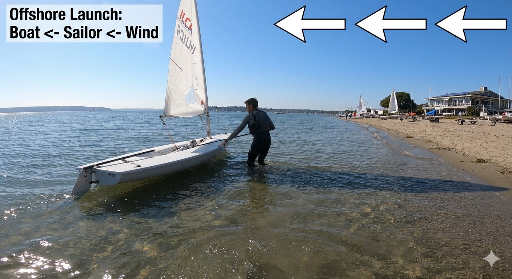
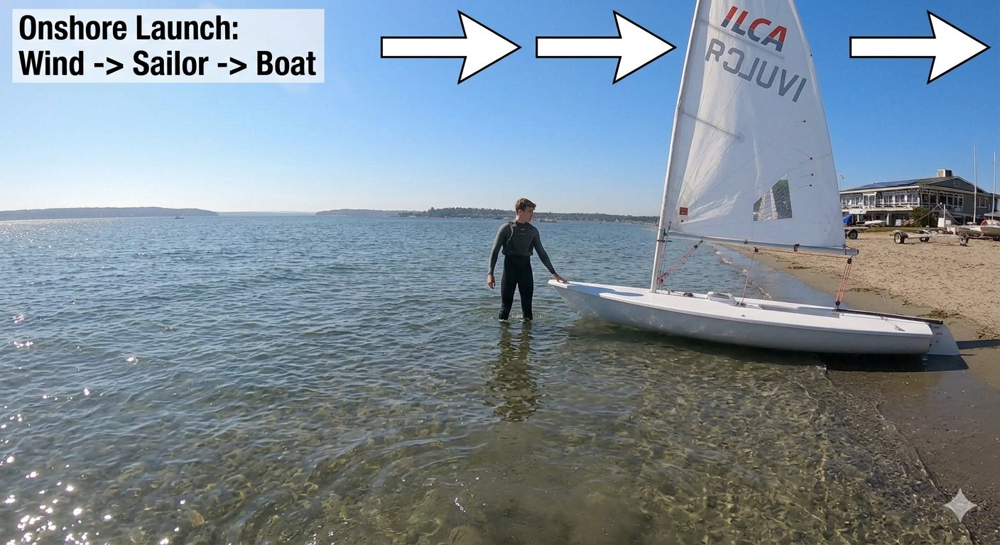
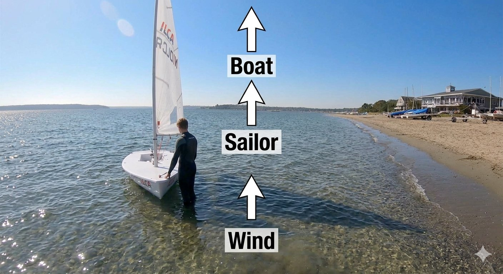
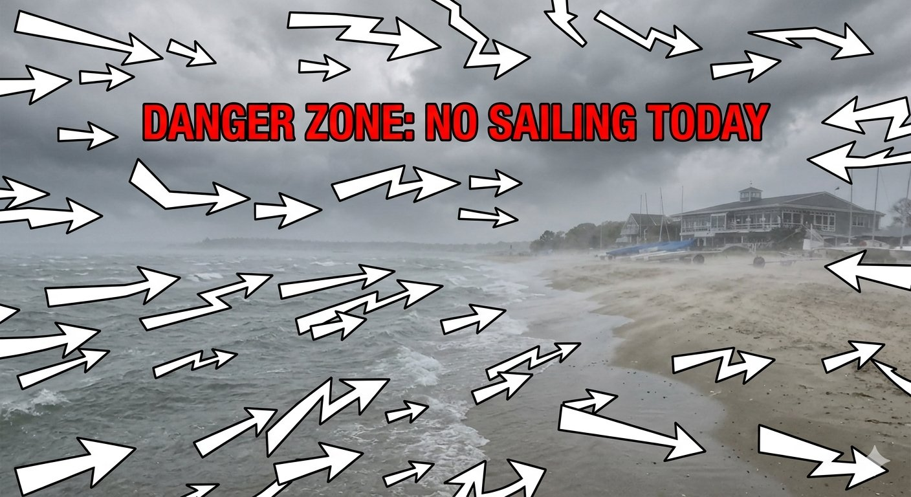

Learn the Wind Angles
Study how different wind directions change your positioning strategy on the beach.

Offshore Launch
Alignment: Boat ← Sailor ← Wind
When the wind blows from the beach out to the water, it wants to push the ILCA away into the deep. Standing on the windward side means you are holding the boat from behind as the breeze pushes it outward.

Onshore Launch
Alignment: Wind → Sailor → Boat
An onshore wind blows directly from the sea onto the land, pushing the hull hard against the beach. To keep control, you must stand deep in the water at the bow, holding the boat pointing out to sea.

Cross-shore Launch
Alignment: Boat ↑ Sailor ↑ Wind (Vertical)
When the wind blows parallel to the shoreline, the safety alignment shifts vertically. You must stand down-wind along the coastline relative to the breeze, keeping yourself directly upwind of the ILCA's side hull.

Danger Zone: No Sailing Today
Alignment: Extreme Risk
When gusts are severe, chaotic, and shifting rapidly across the shoreline, launching becomes impossible. Surf and massive wave energy will overpower any single sailor attempting to stabilize a dinghy by hand at the water's edge.